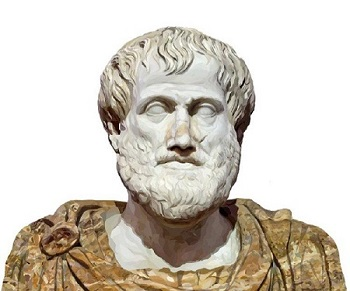

Socrates (469/470-399 BCE) was a Greek philosopher and is considered the father of western philosophy. Plato (l. c. 428-348 BCE) was his most famous student and would teach Aristotle (l. 384-322 BCE) who would then tutor Alexander the Great (l. 356-323 BCE). By this progression, Greek philosophy, as first developed by Socrates, was spread throughout the known world during Alexander's conquests.
